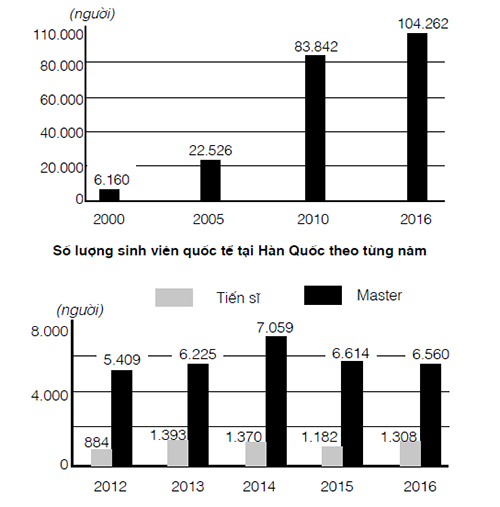

Bạn có biết?
Có 13 cách để phát âm chữ cái “o” trong tiếng Pháp.
Như tác gia người Pháp Antoine de Saint-Exupéry 9 đã nói “Một mục tiêu không có kế hoạch chỉ là một điều ước”, dù bạn quyết định học ngôn ngữ mới cho mục đích dài hạn (đi du học) hay mục đích ngắn hạn (đi du lịch), bạn cũng sẽ phải lên kế hoạch cho việc học tập của bản thân. Một trong những lý do khiến các khóa học ngoại ngữ ở trường học hay trung tâm lại cuốn hút hơn là việc tự học là vì họ dạy theo giáo trình hoàn chỉnh, đã được thử nghiệm và được cải thiện trong vòng nhiều năm. Nhưng nếu chọn tự học, bạn cũng đừng ngại với việc tự lên kế hoạch cho việc học ngoại ngữ của mình. Bạn nên dành thời gian để tìm kiếm và lập kế hoạch học tập trong thời gian đầu. Đổi lại, quá trình học sẽ dễ dàng hơn với một bảng kế hoạch cụ thể.
[9]
Antoine Marie Jean-Baptiste Roger de Saint-Exupéry (1900-1944), là một phi công, một nhà văn nổi tiếng người Pháp. Saint-Exupéry được biết tới nhiều nhất với kiệt tác văn học Le Petit Prince – Hoàng tử bé.
Nắm được những thông tin sau sẽ giúp bạn lập ra kế hoạch học tập một cách hiệu quả:
1. Mục tiêu học ngoại ngữ (xem Bí quyết 2): Phương pháp học ngoại ngữ phụ thuộc rất nhiều vào các mục tiêu học tập của bạn. Ví dụ như, nếu bạn đặt ra mục tiêu học tiếng Pháp giao tiếp cho chuyến đi tham quan châu Âu vào mùa hè, bạn có thể tìm những khóa học tiếng Pháp cho người du lịch trên mạng (tìm trên Google bằng cụm từ khóa tìm kiếm: “French for tourists”). Trong quá trình chuẩn bị cho chuyến đi, hãy thử nghĩ ra các tình huống bạn có khả năng gặp phải. Lúc đó, bạn sẽ cần phải nói gì? Hãy mở Google Maps, tìm địa điểm bạn sẽ đến trong chuyến đi và thả “người hình mắc áo” màu vàng vào nơi bạn muốn khám phá để sử dụng Chế độ xem phố. Rồi bạn mở bài Aux Champs-Élysées của Joe Dassin trên YouTube và học lời bài hát. Còn gì có thể tạo ra không khí lãng mạn của Paris ngay tại nhà của bạn hơn thế được nhỉ? Nhưng nếu bạn đang bắt tay vào học một ngôn ngữ mới để đi du học thì bạn sẽ phải chuẩn bị một kế hoạch chi tiết để có thể nâng cao ngoại ngữ học thuật, phục vụ cho mục tiêu học tập ở nước ngoài.
2. Định vị bản thân: Biết được khả năng học ngoại ngữ của bạn đến đâu. Bạn có đủ động lực để tự học hay cần giáo viên? Bạn có thể chi trả bao nhiêu cho khóa học ngoại ngữ hoặc cho các kỳ thi ngoại ngữ?…
3. Thời gian học ngoại ngữ: Bạn có bao nhiêu tiếng trong ngày hoặc trong tuần để tập trung học ngoại ngữ? Thời gian lý tưởng nhất là bạn có thể dành một vài giờ đồng hồ mỗi ngày để tập trung học, nhất là khi bạn mới bắt đầu học ngôn ngữ mới. Việc học thường xuyên và không bị gián đoạn sẽ giúp bạn có được một nền tảng vững chắc.
4. Nguồn tài liệu học: Bạn sẽ sử dụng những tài liệu nào cho việc học ngoại ngữ của mình? Mời bạn tham khảo thêm trong Bí quyết 9, “Chọn tài liệu học”.
Khi đã có những thông tin kể trên, bạn có thể bắt đầu lập ra kế hoạch cụ thể cho việc học ngoại ngữ dựa trên các mục tiêu đã đưa ra. Hãy viết ra những gì bạn sẽ làm trong mỗi buổi học một cách cụ thể nhất. Ví dụ bạn nên viết “9 giờ tối thứ Hai ngày 7/5/2018: Chương 2 trong Einfach Grammatik A1 bis B1: làm bài tập 1-4” thay vì “9 giờ tối thứ Hai ngày 7/5/2018: Luyện ngữ pháp”.

Trong quá trình thực hiện kế hoạch, hãy cố gắng làm theo bảng kế hoạch đã đặt ra. Hãy tập trung hoàn toàn vào việc học để không bị gián đoạn. Sau 45 phút hoặc 1 tiếng (số lượng thời gian trung bình của mỗi tiết học trên lớp), bạn nên nghỉ giải lao khoảng 5-15 phút trước khi tiếp tục học. Khả năng tập trung học một ngôn ngữ mới thường sẽ ngắn hơn khả năng tập trung trong tiếng mẹ đẻ. Vào mỗi ngày cuối tuần, hãy kiểm tra lại tiến độ học tập của mình và điều chỉnh kế hoạch cho tuần kế tiếp nếu bạn không hoàn thành kế hoạch của tuần.
BÀI TẬP CHO BẠN